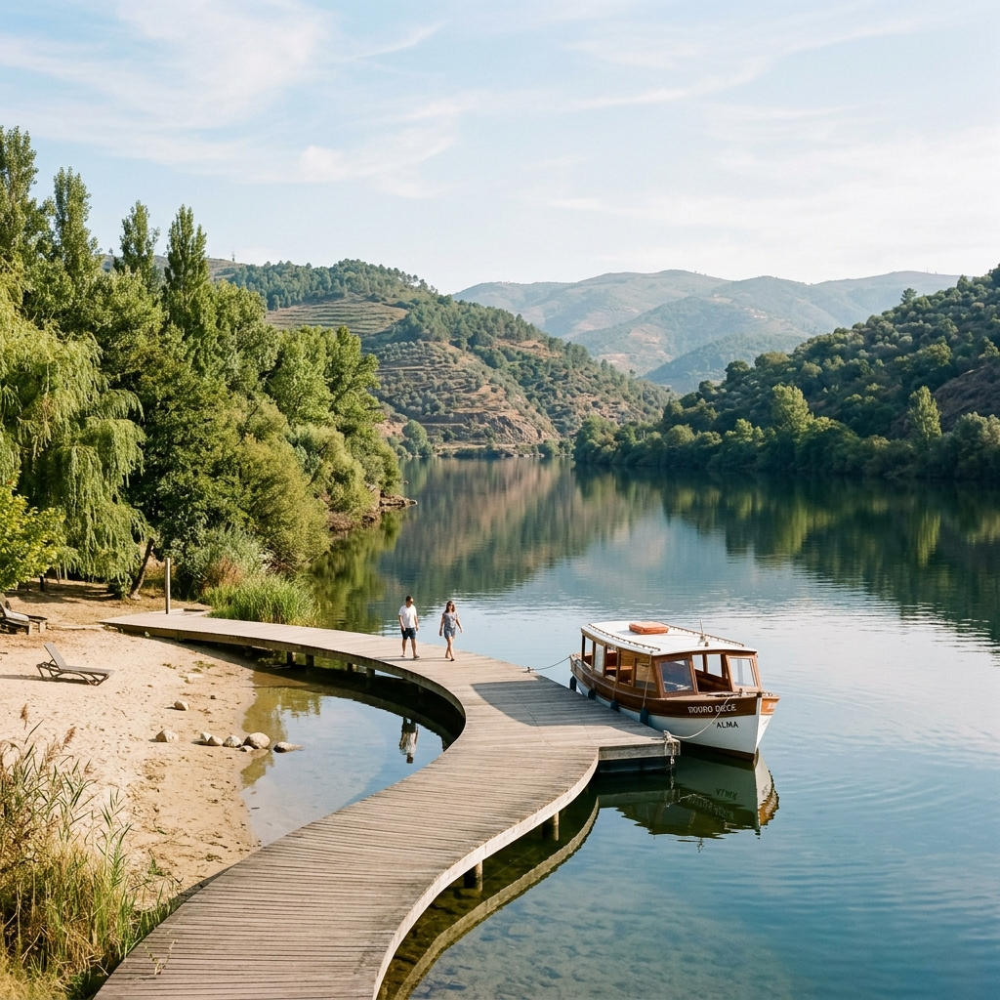

Sabores Autênticos
Vinhos Montes Ermos, Sopas de Tomate e Posta Tradicional
A gastronomia raiana combina a generosidade da carne transmontana com os aromas mediterrânicos dos vales do Douro Superior. Prova os vinhos premiados da Adega Cooperativa e as famosas amêndoas cobertas feitas à mão.

Montes Ermos Grande Reserva
Vinho D.O.C. Douro com notas florais e de esteva, estruturado em xisto duriense.

Peixes do Rio & Gastronomia na Congida
Almoço panorâmico na esplanada sobre o Douro na tranquilidade da praia fluvial.